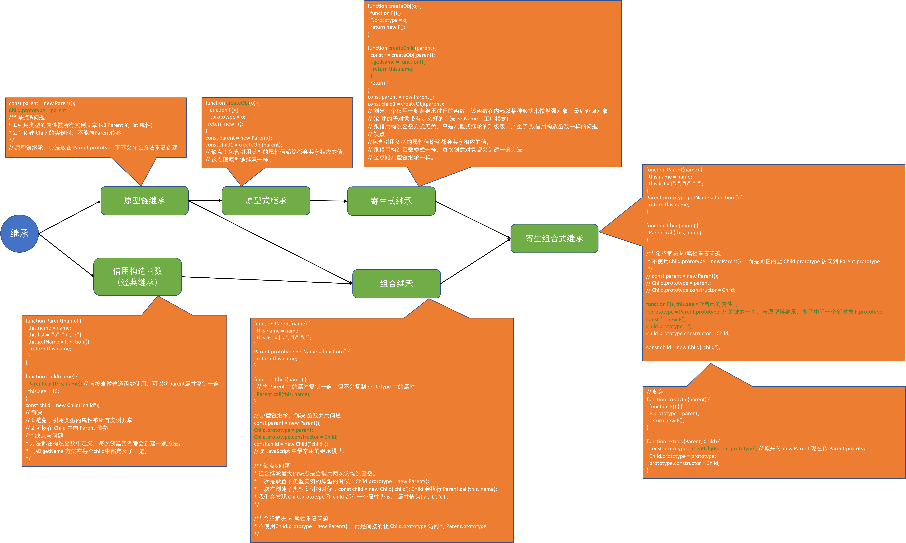

继承发展史
具体实现直接看代码
Object.prototype.__proto__ === null // true
原型链
function Parent() {
this.name = "parent";
this.list = ["a", "b", "c"];
}
Parent.prototype.getName = function () {
return this.name;
}
const parent = new Parent();
/** parent
* name: "parent"
* list: ["a", "b", "c"]
* __proto__ ---> Parent.prototype
* getName: f()
* constructor ---> Parent
* __proto__ ---> Object.prototype
* toString: f()
* ... 内置方法
* constructor: Object
* __proto__: null
*/
parent.name // 调用的是 parent 下的属性
parent.getName() // 调用的是 Parent.prototype 下的属性
parent.toString() // 调用的是 Object.prototype 下的属性
parent 是一个对象，Parent.prototype 也是一个对象，Object.prototype 亦是一个对象，它们之间相互独立，通过 __proto__链接
浏览器会在__proto__中搜索属性 或者返回 undefined
es6 的 class extends 语法 创建的对象结果与 寄生组合式继承 一样。class 中定义的方法会自动放入prototype中
